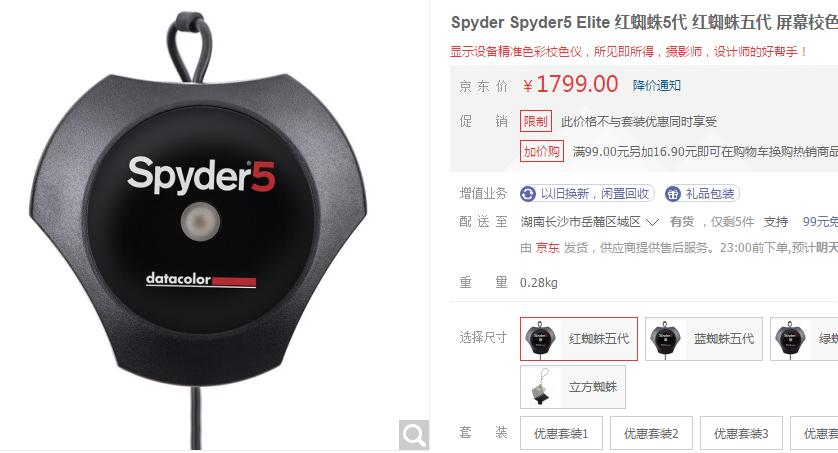
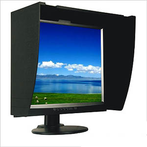
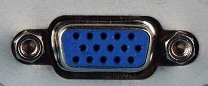
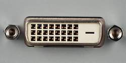

|
第五章：回家后的简单图片处理
第二节：照片的电脑后期处理（数码暗房）
1，显示器的调整
a，颜色管理和色彩空间综述
很多人有过这样的经历：相机显示屏回放鲜艳夺目的图片，用家里电脑看颜色和亮度都差好远；再用办公室电脑看又与家里的电脑有区别。如果能感觉这些差异，那恭喜你，你有一双锐利的对颜色敏感的眼睛，这是数码摄影的必要条件。问题是：到底哪个显示器是准的？
颜色的描述是一个相当主观的东西。比如说这个苹果好红啊，但它到底有多红？能不能用准确的数字把这个红色表示出来，就象1+1=2一样？公司和国家必须要用数目字进行管理，否则就是一笔糊涂账。颜色也是一样，数字化的颜色管理（color management）是数码摄影和印刷制版等行业的基础之一。
幸好业内人士已经制订了对颜色进行数字化管理的标准。不幸的是，
一下子搞了好多种不一样的色彩标准。色彩标准又称色彩空间（color
space，又称色域）。常见的色彩标准有sRGB，AdobeRGB，CMYK等。
sRGB最常见，它的全称是标准红绿蓝standard
Red Green
Blue，1997年由惠普和微软
公司联合制订。我们知道大自然的万千色彩都是由红绿蓝三种颜色按不同比例混合而成，sRGB规定三原色各自有256档，或256阶，像从低到高的台阶一样。比如红色，0为一点红色都没有，随着数字的增加变得越来越红，到256为最红。三原色各有256种，按sRGB标准全世界共有256x256x256=16,777,216种颜色，其中任何一种颜色都能用数字表述出来，比如纯红为R(255),G(0),B(0)，又比如三原色都达到最大值时为纯白R(255),G(255),B(255)。
小数码相机多默认sRGB标准，
多数单反数码相机则有Adobe RGB和sRGB两种色域选择。Adobe RGB是1998年Adobe公司制定的色彩标准，它比sRGB色域更广。理论上来说应该选择Adobe RGB，但现实生活中大多数基于windows的网络运用、显示器、打印机、扫描仪等，特别是中低档的，都默认sRGB色域，所以我们不得已只得选择sRGB，因为需要保持色彩空间的一致性。这是一个劣币驱逐良币的
典型例子。但如果你的照相机扫描仪等设备支持Adobe RGB，你又以打印照片为主很少上网分享图片，毫无疑问应该选择Adobe RGB。
要注意的是，一旦确定一种色彩空间就要前后一致
（从拍摄一直到后期制作），不要换来换去，除非必不得已。Adobe RGB相机拍摄的图片在sRGB的显示器里看感觉颜色被洗了一样淡了好多。
 b，显示器快速校准
设定了色彩空间并不能解决显示器偏色问题。例如现有一个色块，数值为R(255),G(0),B(0)，如果显示器很准的话应当显示高度饱和的红色。但是在甲显示器上鲜艳的红色在乙显示器上可能是暗红。这主要有两个原因：
i，虽然色值相同，但显像管电子枪的灯丝温度以及荧光粉的发光特性不同，色彩就会有差异。液晶显示器由于面板及电路不同也会出现颜色差异。40%的偏色由此而致；
ii，不同显卡或显示器的色彩空间、色温、对比度和亮度等参数设置不同。这个因素导致了60%的颜色差异。
显示器的终极校正需要色度仪、分光光度仪等专业仪器。这些仪器超贵，一般人不是烧得冒烟谁也不会去买。拥有这些仪器提供显示器调整的专业服务机构也收费不菲。
次一级的选择是购买spyder蜘蛛系列校正器，但价格也不便宜，专业版售价人民币三千多，入门级的Spyder 2
Express 快捷蜘蛛也要人民币一千元。如果你购买了价值三千元以上的专业级液晶显示器（如艺卓EIZO），建议买个蜘蛛然后按说明书调整。
这么贵？其实不花钱或花少钱也能调整显示器。根据上面的分析只要统一了显示器的色彩空间、色温、对比度和亮度等基本参数就能纠正大部分色彩偏差。推荐以下三个方法：
I，按钮调整显示器的色彩空间、色温、对比度和亮度，直到自己看着舒服为止，或者用另外一台显示器来对比；
II，下载安装免费的显示器调整软件；
III，如果你手头有较好的彩色喷墨打印机，可用打印机来校准显示器。

开始调整前，请先把屋里的光照强度调到适度水平。白天请把窗帘拉上，晚上请打开天花板的日光灯，不要让台灯直射显示屏。显示器不要面向窗户等强烈光源，要背对窗户。有条件的话建议手工制作一个显示器遮光罩，几块钱买张纯黑卡纸裁减粘好就行，效果类似左图。
大多数LCD显示器都提供了DVI接口与VGA接口，很多用户习惯使用VGA接口，忽视了传输速度更快画面更清晰的DVI接口（Digital
Visual Interface）。如果你还在用VGA接口，请改用DVI，（DVI连接线在淘宝上卖二三十块钱一根）。如果你的电脑没有DVI接口而又使用液晶显示器的话，建议升级为带DVI接口的显卡。下左图为传统的VGA接口，右为DVI接口。
|

|
 |
电脑的显示系统由显卡和显示器两部分组成。装在机箱里的显卡本身没有按钮，但可以通过软件来调系统的亮度、对比度以及颜色饱和度等，这个调节软件通常是和显卡驱动程序捆绑的。不管是CRT显示器还是LCD液晶
显示屏，其外部都有调节按钮，进入菜单后也可以调亮度、对比度和颜色饱和度。到底应该调显卡还是显示器？一般只调一个，如果两个都调，一个正一个反，那永远也调不对。一般建议显卡在安装最新驱动之后就不要再动它，一切默认出厂设置，以调显示器为主，除非显示器按钮调节怎么也搞不定。
下面我们就来看看具体调整步骤。
i，不管你的电脑是品牌整机还是自己组装的，请访问显卡和显示器的制造商网站，下载和安装最新驱动程序；
ii，安装完最新驱动之后，重新启动电脑，用鼠标右键点击电脑桌面，再点击“属性”，然后点击“设置”，颜色质量选择为最高（32位），如果是液晶显示器，请把“屏幕分辨率”调到最大
，因为对绝大多数液晶显示器最大分辨率就是点对点的最佳分辨率；如果是显像管的，请调到显示器制造商推荐的最佳解像度（分辨率）；
iii，台式电脑外接显示器：通过按键进入调整主菜单。先把游戏模式、影视模式之类的各种情景模式都取消。然后按自动调整钮（AUTO），显示器自动调整成厂家默认设置。请千万注意色温，有少数不良厂商为制造假鲜艳色彩将默认色温设为9300K。为纠正这个错误，请再次按键进入显示器菜单，将色温设置为6500K；
iv，调整RGB。所有的颜色都是三原色混合而成，一般的显示器菜单都能单独调整红绿蓝(RGB)三种原色的比例，如果红色调多一点显示器整个色调就会偏红。推荐RGB三原色保持数值一致，不要突出任何一种原色，除非你的显示器偏色很严重，这么偏色的显示器也该买新的了；
v，调整颜色饱和度，一般推荐中间值50%为佳，不要太淡也不要过饱和；
vi，亮度和对比度的调节。亮度是光的强度，对比度是光的锐度，高锐度看起来很美，但过高的锐度会使图片细节丧失。亮度和对比度没有一个绝对数值标准，一般推荐对比度50-80%。很多显示器默认的亮度为100%，这也不推荐，一般白天使用80%亮度为佳，晚上可调得更低一些，看环境光照强度而定，总之调到自己看着舒服为止；
vii，确定色彩空间（color
space）。Adobe RGB和sRGB均可，各种设备请保持一致；如果不是专业用户，也舍不得买高档的显示器和蜘蛛，建议使用sRGB；
viii，确定灰度系数（gamma，即白色到黑色变化的曲线系数）。Windows系统缺省值是2.2，Macintosh苹果系统的缺省值为1.8。这个系数有的机器需要打开显卡的调整软件才行，按钮菜单里面没有。
笔记本电脑显示屏除了亮度之外，大多数没有按钮调节，只能进入软件菜单调整。方法是：右键点击电脑桌面，再点击“属性”，然后点击“设置”，再选择“高级”，然后你会看到一大堆可调整的系数。一项一项点开看。通常这些系数都没有什么可调的，厂家默认的缺省值已经相当好了。请注意笔记本电脑也要先去厂商网站下载驱动软件，特别是显卡的驱动。
经过以上调整，大多数显示器都能正常显示了。此时你可以拿数码相机的显示屏或另外一台调整好的显示器来对比（如笔记本的），都显示同一张未经PS的照片。
别忘了相机的显示屏也要关闭各种色彩增强设置（如户外、鲜艳等模式）。如果颜色依然相差很大，那其中某一台显示器就可以从窗户扔出去了（注意楼下行人）。
如果你怕砸到无辜行人，接下来可以用显示调整软件作进一步调整。有很多免费软件，如Nokia Monitor Test，DisplayMate等等，大家可以下载来试试。鉴于Photoshop是最常用的修图软件，建议使用其自带的Adobe
Gamma显示调整软件，它是Photoshop免费赠送的。安装Photoshop后打开电脑控制面板，通常第一项就是Adobe
Gamma。如果找不到，请上网搜索安装Adobe Gamma，运行之后按提示一步步调整。
请注意软件调整不是万能的，有时按软件调整完发现显示器偏色更严重了。这是因为显示器制造商对不同显示器的调节有不同的理解和规范，不能生搬硬套。
调整显示器的最后一招是与打印机对照调整。摄影是为了得到照片，printing is
believing，出片子才是硬道理。打印机要选用7个墨盒以上的专业照片打印机，使用原装墨水和你能买到的最好的照片打印纸，同时要基本遵循打印机厂家默认设置，使用最高打印解像度并关闭所有打印软件的色彩增强设置。打印之后对照调整显示器，使两者看起来差不多为止。因为打印机校准本身也是个问题，所以理想的搞法是：买一张现成柯达色卡（或EPSON灰卡，gray
balancer），然后屏幕上也显示这张卡，对照慢慢调。
|